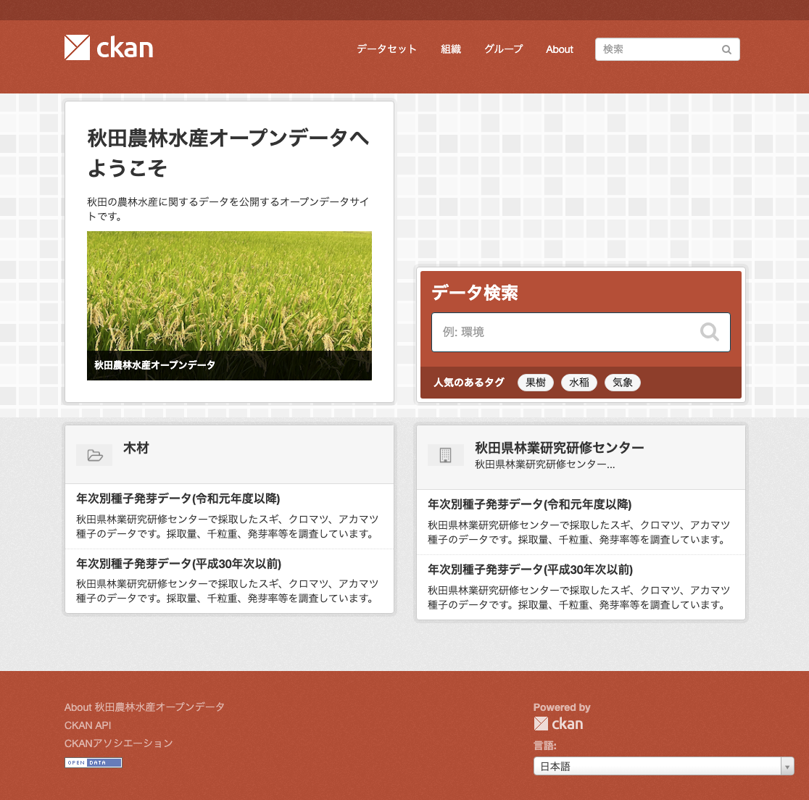
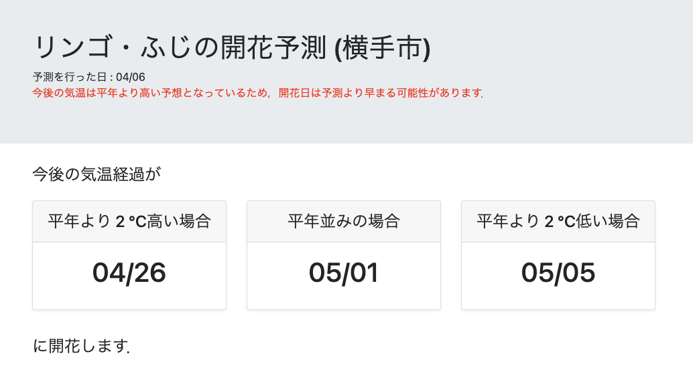

研究内容
LPWA 応用に関する研究
膨大の数の IoT 端末それぞれからサイズの小さいデータを収集するための無線技術として，LPWA(Low-Power Wide-Area)無線技術が注目されています．本研究では，LPWA無線を用いてセンサー情報などを収集する方式やシステムに関して研究します．
Wi-SUN を用いた RTK 補正情報送信技術に関する研究
近年，農機の自動運転技術において，精度の高い位置情報測位システムが必要とされています．高精度の位置情報測位システムには GNSS-RTK 測位方式が広く用いられています．
GNSS-RTK 測位方式では，農機などに搭載し実際の測位を行う移動局に対して，基準局から RTK 補正情報を送信する必要があります．この補正情報の送信には，広大な農地での利用を想定した場合，少なくとも数百メートル以上先と通信可能な無線技術が必要となります．
本研究室では，数百メートル以上先と通信可能な無線技術である Wi-SUN を用いて，RTK 補正情報を送信するシステムに関する研究を進めています．
農林水産オープンデータ流通基盤に関する研究
農林水産分野でのデータ活用をすすめるためには，データ分析や AI 技術に詳しい研究者・技術者と農業関係者との連携が欠かせません．
農林水産分野の研究者や専門機関が持つデータを，データ分析や AI 技術に詳しい研究者・技術者に活用してもらうことを目的として，秋田農林水産オープンデータカタログサイトを構築し，運用しています．このサイトでは現在， 秋田県の 5 つの公設試 (農業試験場，果樹試験場，畜産試験場，水産振興センター，林業研究研修センター) が保有するデータのうち，公開可能なデータをオープンデータとして公開しています．

秋田農林水産オープンデータカタログサイト
これらのオープンデータの活用方法の一つとして，果樹開花日予測システム (下記) の研究を進めています．今後，他の活用方法についても検討を進める予定です．
果樹開花日予測システムに関する研究
リンゴやオウトウ (さくらんぼ) などの果樹は防除のための薬剤を，開花前に散布する必要があります．そのため，生産者にとっては開花日を事前に知ることは重要です．
そこで，直近の気温の推移を元に果樹開花日を予測するシステムの研究を，秋田県果樹試験場と連携して進めています．
現在，試作したシステムの実証実験として，横手市においてリンゴ・ふじとオウトウ・佐藤錦の開花予測を実施しています．

果樹開花日予測システム
本システムの予測結果は，秋田県のホームページを通じて，果樹生産者に対して提供されています．今後，果樹生産者からのフィードバックを元にシステムの改良を進めていく計画です．
自律分散型ネットワーク可用性向上に関する研究
IoT時代には、自動車の位置や信号機の状態などの交通情報や、遠隔医療のための映像情報といった我々の生活を支える実社会に関わる情報が、ネットワークを通じてやり取りされます。そのため、ネットワークには従来と比べ、より高い可用性(高い稼働率)が求められます。そこで本研究では、自律分散型で動作する IPネットワークの可用性向上技術である IP 高速迂回について研究します。IP 高速迂回では、リンク故障を検知したルータが転送経路を即座に別リンクに切り替えることで、パケット転送の中断時間を短縮します。